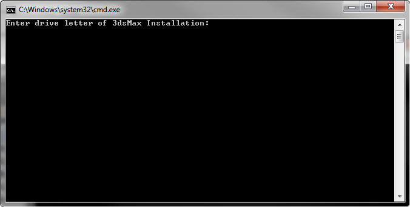
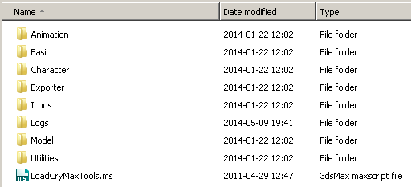

Обзор
Пакет инструментов включает плагины CryExporter для 3ds Max, а также CryMaxTools.
CryExporter позволяет напрямую экспортировать готовые ресурсы движка из 3ds Max.
Установка через CryToolsInstaller
Мы рекомендуем использовать CryToolsInstaller чтобы установить все пакеты инструментов DCC, включая 3dsMax. Если вам нужно установить их вручную, следуйте инструкциям в разделах ниже.
Перед установкой любых плагинов через CryToolsInstaller обязательно настройте информацию о сборке через Менеджер настроек инструмент.
Ручная установка CryExporter
Файлы плагинов можно найти в папке <root>\Tools\3dsmax\plugins\ папка. Скопируйте соответствующие файлы плагина (см. список ниже) в папку ...\plugins каталог в соответствующей папке установки 3dsMax (не помещайте его в папку Stdplugs Папка).
Версия | Файл | |
|---|---|---|
| 32 бит | CryExport12.dlu |
64 бит | CryExport12_64.dlu | |
| 32 бит | CryExport13.dlu |
64 бит | CryExport13_64.dlu | |
| 32 бит | CryExport14.dlu |
64 бит | CryExport14_64.dlu | |
| 32 бит | CryExport15.dlu |
64 бит | CryExport15_64.dlu | |
3dsMax 2014 г. | 64 бит | CryExport16_64.dlu |
3dsMax 2015 г. | 64 бит | CryExport17_64.dlu |
| 3dsMax 2016 г. | 64 бит | CryExport18_64.dlu |
3dsMax 2017 г. | 64 бит | CryExport19_64.dlu |
3dsMax 2018 г. | 64 бит | CryExport20_64.dlu |
| 3dsMax 2019 г. | 64 бит | CryExport21_64.dlu |
| 3dsMax 2020 г. | 64 бит | CryExport22_64.dlu |
| 3dsMax 2021 г. | 64 бит | CryExport23_64.dlu |
| 3dsMax 2022 г. | 64 бит | CryExport24_64.dlu |
| 3dsMax 2023 г. | 64 бит | CryExport25_64.dlu |
Ручная установка CryMaxTools
CryMaxTools Maxscripts — это набор инструментов, написанных на MAXScript, которые помогают художникам, моделистам и аниматорам ускорить рабочий процесс.
Инструменты разделены на пакеты Animation, Artist, Morph и Rigging с пользовательским интерфейсом, пунктами меню и ярлыками.
Сценарии MAXScript CryMaxTools доступны для самых последних версий 3dsMax и автоматически выбирают правильную версию для загрузки.

Файлы сценариев можно найти в папке \Tools\CryMaxTools папка. Инструменты можно установить, скопировав загрузчик инструментов (LoadCryMaxTools.ms) в \Scripts\Startup корневого каталога 3dsMax. После перезапуска 3dsMax инструменты должны загрузиться автоматически.

Чтобы удалить инструменты, удалите файл «LoadCryMaxTools.ms», расположенный в папке \Scripts\Startup папка каталога 3ds Max.